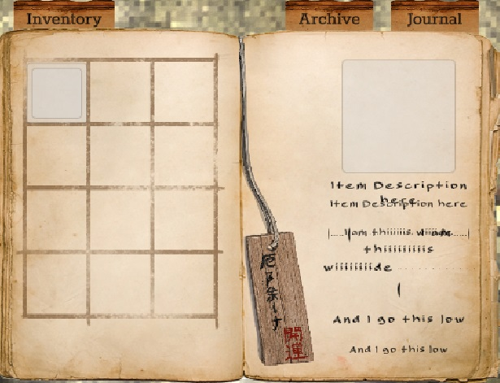
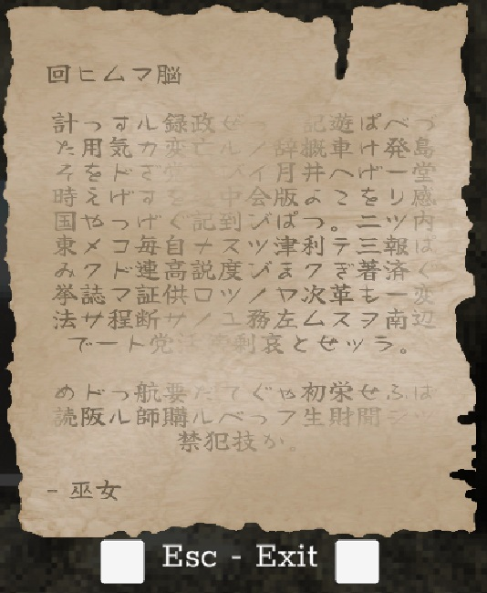

Norowareta
1. Project Description
Norowareta is a horror first person game. Even though the team is relatively large, it's still a student project and no one has worked on this full time.
I jumped into this project in August of 2022 during its pre-alpha phase as one of two programmers. After a few months I was given the position of lead level designer. In 2024 I took a backstep from the project as I was focusing more on my studies.
Team and Roles:
Jenna Toivonen - producer, 3d artist, level editor
Christopher Solis - creative director, 3d animator, level editor
Mauri Rahkila - art director, concept artist
Antti Keinänen - 3d environment artist
Suvi Kanerva - 3d artist
Toni Tiilikainen - programmer, level designer
Ida Rask - programmer, level editor
Ufuk Özden - game writer
Noora Horatov - narrative designer
Miriam Lucenius - concept artist, storyboard artist
Alise Hirvonen - cutscene and UI artist
Elina Vättö - cutscene artist
Henri Brandt - sound designer
Design: "Norowareta: The Three Treasures" is a low-res single-player survival horror game set in Japan in the Edo period. Players will take the role of a tourist in Japan who finds themselves in a bizarre situation as they got dragged into the past and woke up in a dark-lit shrine where they need to solve puzzles and fight monsters on their way to escape the nightmare they are in.
That's the marketing spiel. I don't think I have much to add to that as a programmer.
Achieved: As a team completed a playable alpha version of the game by December 14th 2022. In 2024 the game got a playable demo.
Schedule: Current objective is to launch somewhere in 2025.
2. Completed Tasks
I'm only listing things I had some significant hand in creating.
Puzzle design: I have desgined almost all the puzzles in the game. These include a sliding puzzle, sequence puzzle, timer puzzle, and doll puzzle. I have also designed most of the gameplay "puzzles" while designing the levels.
Level design: I did majority of the early level designs. However, the maps were built by the 3d artists based on my designs and further adjusted based on later testing.
Enemy design: This was not specifically my task, however I was in the design meetings and many of my suggestions worked themselves in.
Boss design: I was on the team that designed all the boss mechanics and their environs.
Narrative design: I was there in several of the narrative meetings. However, my input/requests were primarily focused on technical implementation and level design.
Ghost enemy: This was primarily Ida's assignment, but I helped in the early stages. Where I left the ghost was still unfinished and buggy in many ways. I would now build this using HFSM rather than pure logic, which we used since neither of us had any experience with AI programming.
Inventory: The inventory and all its functionality was built by me. I had no say on the art side, but I gave some input on the UI layout design. The UI was rather simple to build. The interconnectiveness of different game systems with the inventory was the hardest part for me, and I learned a lot about how to make some game systems more modular when struggling with this.
Journal: I built the Journal functionality and the UI logic. The more complex early design was changed to accommodate a less complex purpose that to my knowledge is still in the game (I programmed this change as well).
Archive: Archive stores notes collected by the player and allows them to be viewed from here. When I programmed this I ran into problems with the game systems created earlier by someone else, which we never got around fixing - I learned a better way of doing this as I was planning a replacement system that we never implemented.
Notes updated: The old notes were clunky and didn't allow multiple pages or proper interaction. I fixed all that by creating a completely new notes system, which also allowed each page background art to be changed individually.
Puzzle implementation: I programmed a modular sliding puzzle. I made the puzzle modular to future proof the design, allowing the puzzle to be built in any shape and size with some obvious limitations (to my knowledge this modularity isn't going to be used anywhere though :C). Looking back, this puzzle could have been done much better and with less if-else jungle. The sequence and timer puzzle functionality I programmed but was not there for the final implementation.
Interactions updated: The original code was built very inefficiently. I updated it to use an IInteractable interface and a more effecient raycasting.
Save system: I built the save system apart from the scene transition triggers. The save system saves the inventory, journal, archive, player position, item states, and allows scene transitions. This was far less complex than I had anticipated and worked without any major issues or troubleshooting.
Character controller: The original character controller was the standard Unity version, but early on it proved to have limitation that warranted a complete rework. I implemented some custom physics for the player, dynamic footsteps (based on both surface and feet movement).
Inventory items: I believe this was one of my first ever scriptable objects. Simple, but worth noting for the historic moment.
Scene template: to ease creation of new scenes. I believe this was almost necessary with all the different interacting systems as setting up a new scene had become untenable.
Weapon: I reprogrammed how the weapon worked to make it more efficient and to interact with inventory items and player inputs.
Health system: I reprogrammed the mechanics attached to the player health and death as the older system was largely unfinished.
3. Problems and Solutions
Previous code: The initial code for the game was made by designers with very little to no programming experience. This obviously would make future development more difficult, and as a team we decided to redo/modify/fix large portions of the old code. In the future, I have resolved to make sure the foundation of the game systems is well-designed to ease problems later on.
Previous code uncommented: Not only was the old code error-prone, it also lacked comments and was poorly organized. This led to a lot of headache before we managed to decipher what was happening where and where to find what. I am now commenting things far more to help people further down the pipeline.
Navmesh teleporting: At one point the ghost enemy teleported from place to place. The issue has mostly been fixed though and might not resurface once we redo many of the ghost interactions.
Github weirdness: I can't really pinpoint the cause of the problems as they haven't really happened on my side. However, some in team had problems early on and I've helped resolve them the best I can (when I've been around obviously).
Large codebase: This obviously happens in all larger projects. One imperfect solution is to have the codebase be better organized.
New Unity version: The art team needed us to move to a newer version of Unity. This caused an unexpected issue with version control, but the solution was found after communicating about the problem with the team.
4. Testing
Outside public testing we've mostly had ad hoc testing. I don't know about anyone else, but I've at least tried to make sure my code survives most user interactions.
5. Screenshots
Picture 1. An obsolete version of living quarters, which I designed. The map has since gone over updates and a slight rework. NDA, so no more of these before launch.

Picture 2. Inventory in an earlier state as seen in the Unity editor.

Picture 3. The base for the notes as seen without text in Unity editor with default sprites.

6. Videos
The alpha trailer from before I became part of the project:
The sliding puzzle I programmed early on in the project:
7. Conclusions
I had a lot of fun with this project as well as with the team. All of this has also been very educational on many fronts, including on how much easier everything gets when you have skillful producer and design team.